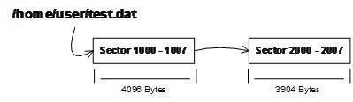

1.4 作業系統做什麼
作業系統的一個功能是提供抽象的介面，另外一個主要功能是管理硬體資源。
計算機硬體的能力是有限的，比如一個CPU一秒鐘能夠執行的指令條數是1億條或是1GB的記憶體能夠最多同時儲存1GB的資料。無論你是否使用它，資源總是那麼多。當然我們不希望自己花錢買回來的硬體成為擺設，充分挖掘硬體的能力，使得計算機執行得更有效率，在更短的時間內處理更多的任務，才是我們的目標。這對於早期動輒數百萬美元的古董計算機來說更是如此，人們挖空心思讓計算機硬體發揮所有潛能。一個計算機中的資源主要分CPU、儲存器（包括記憶體和磁碟）和I/O裝置，我們分別從這三個方面來看看如何挖掘它們的潛力。
1.4.1 不要讓CPU打盹
在計算機發展早期，CPU資源十分昂貴，如果一個CPU只能執行一個程式，那麼當程式讀寫磁碟（當時可能是磁帶）時，CPU就空閑下來了，這在當時簡直就是暴殄天物。於是人們很快編寫了一個監控程式，當某個程式暫時無須使用CPU時，監控程式就把另外的正在等待CPU資源的程式啟動，使得CPU能夠充分地利用起來。這種被稱為多道程式（Multiprogramming）的方法看似很原始，但是它當時的確大大提高了CPU的利用率。不過這種原始的多道程式技術存在最大的問題是程式之間的排程策略太粗糙。對於多道程式來說，程式之間不分輕重緩急，如果有些程式急需使用CPU來完成一些任務（比如使用者互動的任務），那麼很有可能很長時間後才有機會分配到CPU。這對於有些響應時間要求高的程式來說是很致命的，想象一下你在Windows上面點選滑鼠10分鍾以後系統才有反應，那該是多麼沮喪的事。
經過稍微改進，程式執行模式變成了一種協作的模式，即每個程式執行一段時間以後都主動讓出CPU給其他程式，使得一段時間內每個程式都有機會執行一小段時間。這對於一些互動式的任務尤為重要，比如點選一下滑鼠或按下一個鍵盤按鍵後，程式所要處理的任務可能並不多，但是它需要盡快地被處理，使得使用者能夠立即看到效果。這種程式協作模式叫做分時系統（Time-Sharing System），這時候的監控程式已經比多道程式要複雜多了，完整的作業系統雛形已經逐漸形成了。Windows的早期版本（Windows 95和Windows NT之前），Mac OS X之前的Mac OS版本都是採用這種分時系統的方式來排程程式的。比如在Windows 3.1中，程式呼叫Yield、GetMessage或PeekMessage這幾個系統呼叫時，Windows 3.1作業系統會判斷是否有其他程式正在等待CPU，如果有，則可能暫停執行當前的程式，把CPU讓出來給其他程式。如果一個程式在進行一個很耗時的計算，一直霸佔著CPU不放，那麼作業系統也沒辦法，其他程式都只有等著，整個系統看過去好像宕機了一樣。比如一個程式進入了一個while(1)的死迴圈，那麼整個系統都停止了。
經過稍微改進，程式執行模式變成了一種協作的模式，即每個程式執行一段時間以後都主動讓出CPU給其他程式，使得一段時間內每個程式都有機會執行一小段時間。這對於一些互動式的任務尤為重要，比如點選一下滑鼠或按下一個鍵盤按鍵後，程式所要處理的任務可能並不多，但是它需要盡快地被處理，使得使用者能夠立即看到效果。這種程式協作模式叫做分時系統（Time-Sharing System），這時候的監控程式已經比多道程式要複雜多了，完整的作業系統雛形已經逐漸形成了。Windows的早期版本（Windows 95和Windows NT之前），Mac OS X之前的Mac OS版本都是採用這種分時系統的方式來排程程式的。比如在Windows 3.1中，程式呼叫Yield、GetMessage或PeekMessage這幾個系統呼叫時，Windows 3.1作業系統會判斷是否有其他程式正在等待CPU，如果有，則可能暫停執行當前的程式，把CPU讓出來給其他程式。如果一個程式在進行一個很耗時的計算，一直霸佔著CPU不放，那麼作業系統也沒辦法，其他程式都只有等著，整個系統看過去好像宕機了一樣。比如一個程式進入了一個while(1)的死迴圈，那麼整個系統都停止了。
這在現在看來是很荒唐的事，系統中的任何一個程式死迴圈都會導致系統宕機，這是無法令人接受的。當然當時的PC硬體處理能力本身就很弱，PC上的應用也大多是比較低端的應用，所以這種分時方式勉強也能應付一下當時的互動式環境了。此前在高階領域，非PC的大中小型機領域，其實已經在研究一種更為先進的作業系統模式了。這種模式就是我們現在很熟悉的多工（Multi-tasking）系統，作業系統接管了所有的硬體資源，並且本身執行在一個受硬體保護的級別。所有的應用程式都以程式（Process）的方式執行在比作業系統許可權更低的級別，每個程式都有自己獨立的地址空間，使得程式之間的地址空間相互隔離。CPU由作業系統統一進行分配，每個程式根據程式優先順序的高低都有機會得到CPU，但是，如果執行時間超出了一定的時間，作業系統會暫停該程式，將CPU資源分配給其他等待執行的程式。這種CPU的分配方式即所謂的搶佔式（Preemptive），作業系統可以強製剝奪CPU資源並且分配給它認為目前最需要的程式。如果作業系統分配給每個程式的時間都很短，即CPU在多個程式間快速地切換，從而造成了很多程式都在同時執行的假象。目前幾乎所有現代的作業系統都是採用這種方式，比如我們熟悉的UNIX、Linux、Windows NT，以及Mac OS X等流行的作業系統。
1.4.2 裝置驅動
作業系統作為硬體層的上層，它是對硬體的管理和抽象。對於作業系統上面的執行庫和應用程式來說，它們希望看到的是一個統一的硬體訪問模式。作為應用程式的開發者，我們不希望在開發應用程式的時候直接讀寫硬體埠、處理硬體中斷等這些繁瑣的事情。由於硬體之間千差萬別，它們的操作方式和訪問方式都有區別。比如我們希望在顯示器上畫一條直線，對於程式設計師來說，最好的方式是不管計算機使用什麼顯示卡、什麼顯示器，多少大小多少解析度，我們都只要呼叫一個統一的LineTo()函式，具體的實現方式由作業系統來完成。試想一下如果程式設計師需要關心具體的硬體，那麼結果會是這樣：對於A型號的顯示卡來說，需要往I/O埠0x1001寫一個命令0x1111，然後從埠0x1002中讀取一個4位元組的視訊記憶體地址，然後使用DDA（一種畫直線的圖形演算法）逐個地在視訊記憶體上畫點……如果是B型號的顯示卡，可能完全是另外一種方式。這簡直就是災難。不過在作業系統成熟之前，的確存在這樣的情況，就是應用程式的程式設計師需要直接跟硬體打交道。
當成熟的作業系統出現以後，硬體逐漸被抽象成了一係列概念。在UNIX中，硬體裝置的訪問形式跟訪問普通的檔案形式一樣；在Windows系統中，圖形硬體被抽象成了GDI，聲音和多媒體裝置被抽象成了DirectX物件；磁碟被抽象成了普通檔案系統，等等。程式設計師逐漸從硬體細節中解放出來，可以更多地關注應用程式本身的開發。這些繁瑣的硬體細節全都交給了作業系統，具體地講是作業系統中的硬體驅動（Device Driver）程式來完成。驅動程式可以看作是作業系統的一部分，它往往跟作業系統核心一起執行在特權級，但它又與作業系統核心之間有一定的獨立性，使得驅動程式有比較好的靈活性。因為PC的硬體多如牛毛，作業系統開發者不可能為每個硬體開發一個驅動程式，這些驅動程式的開發工作通常由硬體生產廠商完成。作業系統開發者為硬體生產廠商提供了一係列介面和框架，凡是按照這個介面和框架開發的驅動程式都可以在該作業系統上使用。讓我們以一個讀取檔案為例子來看看作業系統和驅動程式在這個過程中扮演了什麼樣的角色。
提到檔案的讀取，那麼不得不提到檔案系統這個作業系統中最為重要的組成部分之一。檔案系統管理著磁碟中檔案的儲存方式，比如我們在Linux系統下有一個檔案“/home/user/test.dat”，長度為8 000個位元組。那麼我們在建立這個檔案的時候，Linux的ext3檔案系統有可能將這個檔案按照這樣的方式儲存在磁碟中：檔案的前4 096位元組儲存在磁碟的1000號扇區到1007號扇區，每個扇區512位元組，8個扇區剛好4 096位元組；檔案的第4 097個位元組到第8 000位元組共3 904個位元組，儲存在磁碟的2000號扇區到2007號扇區，8個扇區也是4 096位元組，只不過只儲存了3 904個有效的位元組，剩下的192個位元組無效。如果把這個檔案的儲存方式看作是一個鏈狀的結構，它的結構如圖1-4所示。

這裡我們先穿插一個關於硬碟的結構介紹，關於硬碟結構可能很多讀者已經有一個大概的瞭解，那就是硬碟基本儲存單位為扇區（Sector），每個扇區一般為512位元組。一個硬碟往往有多個碟片，每個碟片分兩面，每面按照同心圓劃分為若幹個磁軌，每個磁軌劃分為若幹個扇區。比如一個硬碟有2個碟片，每個盤面分65 536磁軌，每個磁軌分1 024個扇區，那麼硬碟的容量就是2 * 2 * 65 536 * 1 024 * 512 = 137 438 953 472位元組（128GB）。但是我們可以想象，每個盤面上同心圓的週長不一樣，如果按照每個磁軌都擁有相同數量的扇區，那麼靠近盤面外圍的磁軌密度肯定比內圈更加稀疏，這樣是比較浪費空間的。但是如果不同的磁軌扇區數又不同，計算起來就十分麻煩。為了遮蔽這些複雜的硬體細節，現代的硬碟普遍使用一種叫做LBA（Logical Block Address）的方式，即整個硬碟中所有的扇區從0開始編號，一直到最後一個扇區，這個扇區編號叫做邏輯扇區號。邏輯扇區號拋棄了所有複雜的磁軌、盤面之類的概念。當我們給出一個邏輯的扇區號時，硬碟的電子裝置會將其轉換成實際的盤面、磁軌等這些位置。
檔案系統儲存了這些檔案的儲存結構，負責維護這些資料結構並且保證磁碟中的扇區能夠有效地組織和利用。那麼當我們在Linux作業系統中，要讀取這個檔案的前4 096個位元組時，我們會使用一個read的系統呼叫來實現。檔案系統收到read請求之後，判斷出檔案的前4 096個位元組位於磁碟的1000號邏輯扇區到1007號邏輯扇區。然後檔案系統就向硬碟驅動發出一個讀取邏輯扇區為1000號開始的8個扇區的請求，磁碟驅動程式收到這個請求以後就向硬碟發出硬體命令。向硬體傳送I/O命令的方式有很多種，其中最為常見的一種就是透過讀寫I/O埠暫存器來實現。在x86平台上，共有65 536個硬體埠暫存器，不同的硬體被分配到了不同的I/O埠地址。CPU提供了兩條專門的指令“in”和“out”來實現對硬體埠的讀和寫。
對IDE介面來說，它有兩個通道，分別為IDE0和IDE1，每個通道上可以連線兩個裝置，分別為Master和Slave，一個PC中最多可以有4個IDE裝置。假設我們的檔案位於IDE0的Master硬碟上，這也是正常情況下硬碟所在的位置。在PC中，IDE0通道的I/O埠地址是0x1F0～0x1F7及0x376～0x377。透過讀寫這些埠地址就能與IDE硬碟進行通訊。這些埠的作用和操作方式十分複雜，我們以實現讀取1000號邏輯扇區開始的8個扇區為例：
• 第0x1F3～0x1F6 4個位元組的埠地址是用來寫入LBA地址的，那麼1000號邏輯扇區的LBA地址為0x000003E8，所以我們需要往0x1F3、0x1F4寫入0x00，往0x1F5寫入0x03，往0x1F6寫入0xE8。
• 0x1F2這個地址用來寫入命令所需要讀寫的扇區數。比如讀取8個扇區即寫入8。
• 0x1F7這個地址用來寫入要執行的操作的命令碼，對於讀取操作來說，命令字為0x20。
所以我們要執行的指令為：
out 0x1F3, 0x00
out 0x1F4, 0x00
out 0x1F5, 0x03
out 0x1F6, 0xE8
out 0x1F2, 0x08
out 0x1F7, 0x20
在硬碟收到這個命令以後，它就會執行相應的操作，並且將資料讀取到事先設定好的記憶體地址中（這個記憶體地址也是透過類似的命令方式設定的）。當然這裡的例子中只是最簡單的情況，實際情況比這個複雜得多，驅動程式需要考慮硬體的狀態（是否忙碌或讀取錯誤）、排程和分配各個請求以達到最高的效能等。